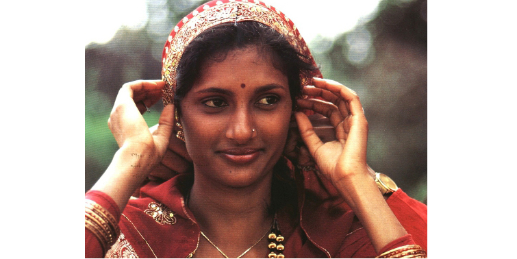

AKROSH COMPANY
AKROSH COMPANY
the organisation of ARA Foundation for Charity

WIFE WHO WAS BRAVE
Mr. Sudhakar, 30 years old, son of Mr. Ganapathy, hailed from Paradapattu, Villupuram, Tamil Nadu. After completing his diploma, he was engaged as a full time agriculturist taking care of his fields. He was the eldest in the family and was taking care of his parents. He was a lovable person and very much attached to his three children.
It was on 21-05-16 when tragedy struck the family. Mr. Sudhakar while riding his two wheeler near Paradapattu self-skid and fell, he sustained severe head injury and became unconscious. He was rushed to Pondicherry Institute of Medical Sciences (PIMS) for further medical management.
From the day of admission Mr. Sudhakar showed no signs of improvement. After a series of tests on 25-05-16, he was declared brain dead. His wife Mrs. Panchalli with her three small children next to her was unable to bear the loss of her husband. The intensive care team in PIMS counseled the family members on the concept of organ donation and how Mr. Sudhakar could still live on in the world after his death. Mrs. Panchalli, in spite of her grief, decided to donate the organs of Mr. Sudhakar, so that her husband could make an invaluable difference in the lives of others. On 26-05-16 Mr. Sudhakar's liver, two kidneys, and heart were donated to needy patients.